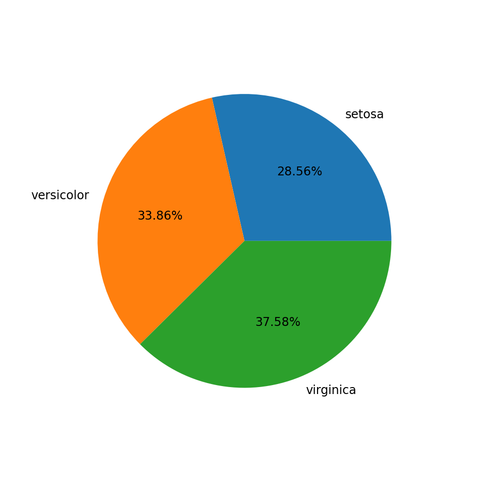
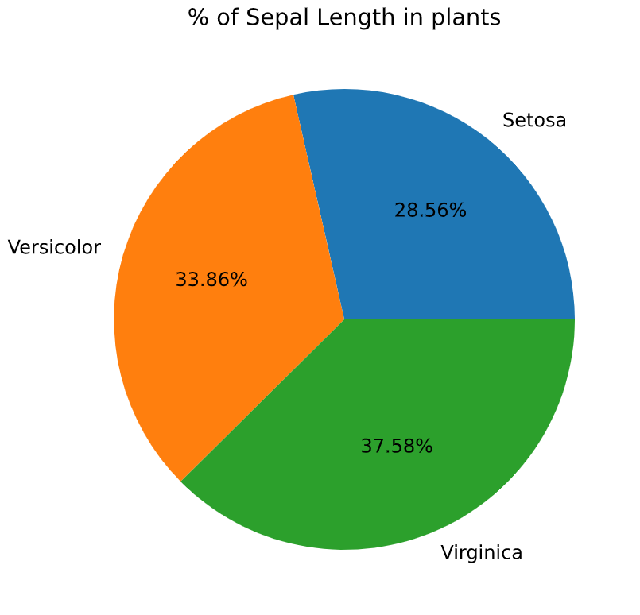

Here is the code on drawing pie chart with percentages with python and iris data set. Only Sepal length variable is used in this tutorial. Image is generated with pandas and matplotlib
Load python libraries
import pandas as pd
import matplotlib.pyplot as plt
Read iris data
df = pd.read_csv("iris.csv")
Draw the pie chart with pandas in-built pie chart
## Pie chart by pandas, lesser control
df.groupby(["species"])["sepal_length"].sum().reset_index(name ='Total').set_index('species').plot(kind='pie', label='', legend = False, y='Total', autopct='%.2f%%',figsize=(10,10),fontsize=18,)

Draw the pie chart with matplotlib
## Pie chart by matplot lib
df=df.groupby(["species"])["sepal_length"].sum().reset_index(name ='Total')
plt.figure(figsize=(10,10))
plt.pie(df['Total'],labels= df['species'].str.title(), autopct='%.2f%%')
plt.title('% of Sepal Length in plants')
plt.rcParams['font.size'] = 24
plt.show()
